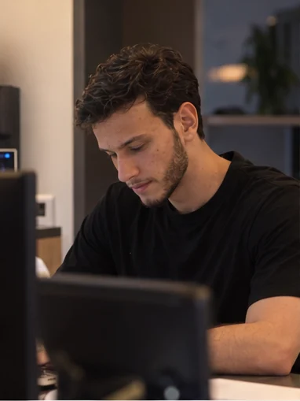
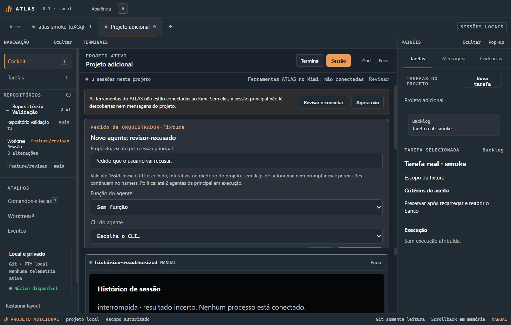

Do requisito ao deploy
Projeto, construo, implanto e mantenho. Deploy com Docker no Railway e CI no GitHub Actions.

Único dev de uma plataforma de saúde com 10 apps em produção. Backend e integração de sistemas, do requisito ao deploy.
Role para entrar ↓A IA pode ajudar muito, mas pensar continua sendo trabalho nosso.
Armando Carlini · LinkedIn, outubro de 2026
Abordagem
Meu foco é backend e integração: o caminho de um dado que sai de um sistema e precisa chegar certo no outro, com autenticação, contratos de dados e testes no caminho.
Projeto, construo, implanto e mantenho. Deploy com Docker no Railway e CI no GitHub Actions.
WhatsApp e Instagram pela Meta Cloud API, prontuário eletrônico, ERP, Google Calendar e assinatura eletrônica conversando entre si.
Login único, MFA, acesso por função e trilha de auditoria. Operações que alteram dados passam por validação e aprovação explícitas no sistema.
Milhares de testes automatizados com Jest, Vitest e Playwright rodando a cada mudança.
Capítulo 01 · Revion Platform · desde dezembro de 2025
Sou o único desenvolvedor responsável por projetar, construir, implantar e manter a Revion Platform: dez aplicações internas que sustentam as operações clínicas, administrativas e comerciais da Revion International Clinic.
Da primeira mensagem da paciente pelo WhatsApp até o dia da cirurgia, com gestão, documentos e IA em volta. Stack: JavaScript, TypeScript, Node.js, Express, PostgreSQL, Prisma, React, Electron, Python, Docker, Railway e GitHub Actions.
Como a plataforma funciona · mapa simplificado
A mensagem chega pela Meta Cloud API ao Atendimento. A equipe entra em tudo com um login só, o Revion's Place.
Atribuição de origem, agenda e régua de follow-up, integradas ao prontuário eletrônico.
O DocShield preenche termos e contratos a partir do prontuário do Feegow, coleta a assinatura e arquiva na ficha.
O Data Agent entrega snapshots somente leitura. Dashboard, TVs e Experience mostram indicadores e NPS por médico.
Um servidor MCP expõe só consultas e pedidos. Nada é escrito direto no banco: cada alteração vira um pedido registrado na auditoria.
01 / 05 · apps/atendimento
Aplicação omnichannel integrada ao WhatsApp Business e ao Instagram pela Meta Cloud API, com assistente de IA 24 horas que tira dúvidas, agenda consultas e passa para a equipe com o contexto da conversa.
02 / 05 · apps/comercial · CRO
Gestão de leads com atribuição de origem, de campanhas pagas ou orgânico, e acompanhamento de conversão integrados à agenda e ao prontuário eletrônico da clínica.
03 / 05 · apps/docshield
Plataforma de termos de consentimento e contratos: modelos preenchidos a partir do prontuário, geração de PDF, assinatura eletrônica e arquivamento automático.
04 / 05 · apps/place · dashboard · data-agent
Login único, autenticação multifator e acesso por função nas aplicações internas. Assistentes por setor com ferramentas restritas e registro de auditoria em toda operação que altera dados.
05 / 05 · apps/dashboard · revion-experience
Painéis gerenciais e telas de TV que consolidam indicadores clínicos, financeiros e de marketing, com pesquisas da jornada da paciente e workers em Python que sincronizam as agendas médicas.
Telas em código · dados de exemplo
Pessoal
Moro em São Paulo, termino Engenharia de Computação na FMU em dezembro de 2026. Sou muito fã do Clóvis de Barros Filho.
Sobre
Engenheiro de software em São Paulo, com foco em backend e integração de sistemas. Sou o único dev da Revion International Clinic, onde projetei e construí a Revion Platform.
Atuo do requisito ao deploy, com foco em integrações, autenticação, modelagem de dados e código sustentado por testes.
Diário · 28 de outubro de 2026 · AI Brasil Experience, Distrito Anhembi
Trocar a resposta em texto por um contrato de saída validado pelo código.
LLMs são probabilísticos, mas segurança exige regras determinísticas.
O “sim” humano precisa ser um mecanismo da infraestrutura, não uma instrução no prompt.
Passei o dia no AI Brasil Experience com a turma da FMU. Nas palestras sobre IA nas empresas, dois dados me fizeram repensar ganho de produtividade: segundo o MIT NANDA, 95% dos pilotos de IA generativa não mostraram impacto mensurável na DRE; num estudo do METR, desenvolvedores experientes se sentiram 20% mais rápidos com IA, mas o cronômetro mediu 19% mais lentos.
Para fechar o dia, o Clóvis de Barros Filho, de quem sou muito fã: se o robô faz a ginástica no seu lugar, não adianta nada. A escola existe para a gente aprender a pensar. A IA pode ajudar muito, mas pensar continua sendo trabalho nosso.
Capítulo 02 · Open source · MIT · desde outubro de 2026
Um cockpit desktop, local-first, para acompanhar e coordenar agentes de IA de código em vários terminais ao mesmo tempo, sem tirar a decisão das suas mãos.
Electron, React, Node.js, SQLite e um servidor MCP próprio. Novos agentes, delegação de tarefas e worktrees Git isoladas só começam depois do seu consentimento.
github.com/armandocarlini/atlas ↗
Captura real dos testes de fumaça · o pedido espera a sua decisão
Cada pedido de agente mostra o propósito, a validade e a política de execução, como o limite de dois agentes da sessão principal ao mesmo tempo. Recusar é tão fácil quanto aprovar.
A aprovação cria uma worktree Git isolada, numa branch própria, e o agente nasce nela. O ATLAS nunca remove worktrees nem branches.
O agente pede revisão com os comandos que executou, e o ATLAS anexa um retrato Git coletado por ele mesmo. Se o lint falhou, o painel mostra.
A ponte MCP usa named pipe com token por run e só é registrada com o seu consentimento. Cada sessão recebe ferramentas restritas ao próprio projeto.
PTY com node-pty e xterm.js. Qualquer terminal vira uma janela própria e volta ao grid sem encerrar o processo.
Testes em Node, testes de fumaça do desktop e CI no GitHub Actions. Os agentes propõem, você integra.
Cockpit com grid e foco por sessão; tarefas, mensagens e evidências.
SQLite com projetos, sessões, runs, tarefas e eventos; PTY; descoberta Git somente leitura; host MCP.
Kimi Code e OpenCode, conectados por named pipe, sem porta de rede.
Central da atendente: uma tela para operar os WhatsApps de várias empresas ao mesmo tempo. O Atendimento da Revion nasceu desse código.
ProdutoEntradas, saídas, financeiro, lista de compras, relatórios e um assistente que responde sobre o estoque da clínica.
MóduloVídeo de lançamento feito inteiro em código: mascote animado, voz sintetizada, trilha gerada e render quadro a quadro com Chrome e ffmpeg.
Vídeo · 3:56Workers em Python que mantêm as agendas dos médicos sincronizadas com o sistema da clínica.
PythonPlugin de Claude Code que produz vídeo vertical do roteiro ao corte final, com legenda bilíngue e revisão dos quadros.
PluginBusca da paciente por nome ou CPF e acesso direto aos termos e contratos do dia.
Recepção